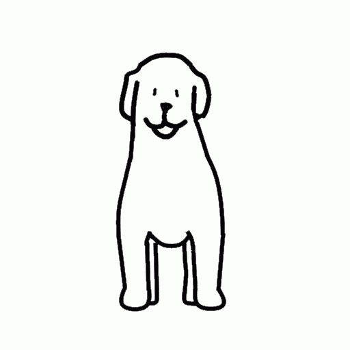

かならずお読みください→
ーあっちをむいたりこっちをむいたりー

小児科外来の待合室は、毎日多くのこどもさんと親御さんでいっぱいです。
あるこどもさんはあそびばでおもちゃで遊んでいます。絵本をみているこどもさんもいます。
おかあさんにしっかりくっついて不安そうにあちこち見ているこどもさんもいます。
スマホをみている親御さんのとなりで小学生のこどもさんがゲーム機で遊んでいることもあります。
今時よく見かける光景です。
あるおかあさんは真剣にスマホをみています。
そしてときどきニコニコします。
クスクスと笑うこともあります。
そばのベビーカーの中から、小さな赤ちゃんがじっとこれを見ています。
どうやら目を覚ましたことにおかあさんは気が付かないようです。
赤ちゃんはまだお話できませんが、通りかかった私にも言いたいことはよくわかります。
『わたしもそれがやりたい わたしもスリスリしたい』
おおよそこのようなきっかけでスリスリスワイプであそぶおもちゃをつくることになりました。
もう特に説明はしません。何が起きるのかはみなさんが実際にやってみてください。
スマホやタブレとでは、モニター表面のタッチパッドへのタッチやスライドで操作します。 皆さんご存知のように操作方法は、タップ、ダブルタップ、フリック、スワイプ、スクロール、ドラッグなどあります。 そのうちタッチしたあとスライドして放す動作がスワイプです。
決まった場所をきちんと押さないといけないパソコンのキーボード操作と比較すると、タッチする場所やスライドする方向や長さは おおまかでいいところが特徴です。この特徴のおかげで片手で立ったままや歩きながらなど不安定な状況でスマホを使用できるのです。パソコンではこのような真似はとてもできません。
この特徴は見方を変えると、他の理由で安定した操作が苦手な場合、例えばしびれやふるえなどで正確な滑らかなうごきが苦手な場合にも比較的操作しやすいと考えることができます。 さてここまでお読みになったみなさんのお近くにこのような不自由をおもちのかたは、、、たぶんお見えになるとおもいます。
ところが、みなさんが自由にお使いになっている、あそこにもあるここにもある、スワイプ（その他の操作動作も）は Android や iOS といった OS レベルで管理されている機能です。このためその他の目的のために自由に使用することができません。 通常の場合は、『それはできません』でこの話はおわります。
ところがこれは不自由のあるひとに役に立つかもしれないことですし、私自身があきらめの悪い変人ということもあって、結局スワイプを手づくりして、しろいいぬをあっちこっちむかせるのに使ってみました。まあまあ動くようになりましたのであそんでみてください。
さて、次回はこのスワイプの作り方についておはなししたいと思います。
2022/05/13 公開
研究企画課リハ工学科にもどる
←もくじはこちらです